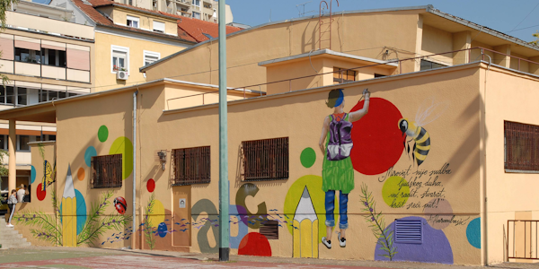
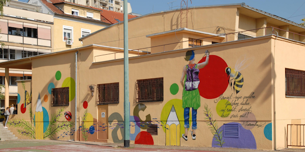
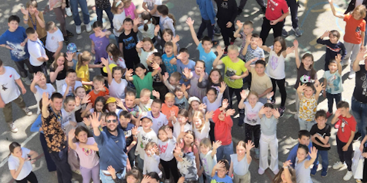
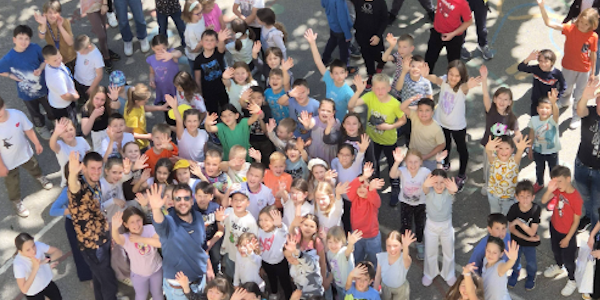

 



Obavijesti - Programi
Programi se odnose na dugoročne projekte učenja i razvoja koje škola nudi za obogaćivanje obrazovanja učenika.
Smotra hrvatskoga školskog filma
Opis: Program Smotre hrvatskoga školskog filma održao se u studenom 2021. godine. Obuhvaća filmsko i videostvaralaštvo učenika osnovnih i srednjih škola.
Tajnik smotre: Jasna Pandžić
Treći Erasmus projekt breljanske osnovne škole
Osnovnoj školi dr. Franje Tuđmana Brela odobren je treći Erasmus projekt pod nazivom “Inkluzivna, održiva, digitalna, inovativna breljanska škola”.
U pitanju je KA122 projekt koji se provodio od 1. travnja 2023. godine u trajanju od 18 mjeseci. Vrijednost projekta je 15.127,00 eura.
Ciljevi ovog međunarodnog projekta su:
- dugoročno poboljšanje u vidu obrazovne i socijalne inkluzije u radu s učenicima koji su u nepovoljnom položaju
- nastavak modernizacije obrazovanja i nastavak jačanja kulturne pripadnosti europskom nasljeđu započetog u prethodnim Erasmus projektima – korištenje inovativnih metoda poučavanja
- razvijanje tzv. mekih vještina
- razvijanje komunikacijskih vještina učenika, razvijanje njihove suradnje, kritičkog razmišljanja i kreativnosti kroz timski rad
- uvesti principe održivog razvoja u kurikule raznih školskih predmeta te poticati održivo ponašanje u školi
Metoda “Projekt građanin”
Učitelji, nastavnici i stručni suradnici osnovnih i srednjih škola u Bjelovarsko-bilogorskoj županiji stjecali znanja o provedbi metode “Projekt građanin”.
Edukaciju su vodile profesorice Ornela Malogorski i Željka Holjević te dr. sc Zdenka Brebrić. Županijski stručni skup iz Građanskog odgoja i obrazovanja u korelaciji s međupredmetnim temama naziva „Metoda Projekt građanin“ održan je u utorak, 5. prosinca 2023. u Komercijalnoj i trgovačkoj školi Bjelovar.
Projektni zadatak – Hrvatski se jezik voli znanjem!
Povodom Dana hrvatskoga jezika učenici 2. M Tehničke škole Virovitica posjetili su Gradsku knjižnicu i čitaonicu Virovitica i prezentirali projektni zadatak.
Učenici su izrađivali digitalne plakate na temu povijesti hrvatskoga jezika (od početaka pismenosti u Hrvata, najznačajnijih spomenika i natpisa preko hrvatskog narodnog preporoda i filoloških škola pa sve do do suvremenosti).